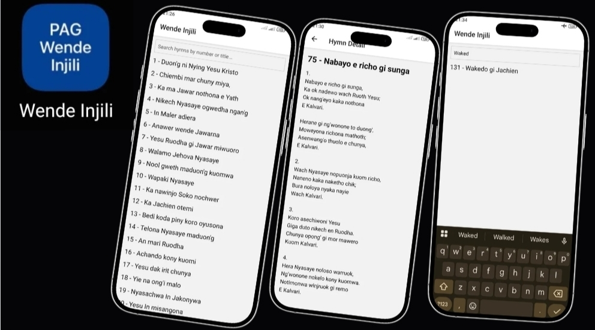

Full Stack Developer
Building seamless, modern web and mobile applications that deliver consistent experiences across platforms. Passionate about offline‑first and online‑first design, while championing privacy‑focused solutions that respect and protect user trust.
About Me
I’m Loice Akello, a freelance full stack developer specializing in both mobile and web applications. My expertise lies in building robust, scalable solutions designed for both offline‑first and online‑first experiences, paired with clean, intuitive UI/UX and workflows that meet strict compliance requirements.
Beyond writing code, I take a holistic approach to development — ensuring every project is not only functional but also reliable, privacy‑conscious, and future‑ready. I thrive on transforming ideas into complete products, guiding them from concept to deployment with precision and care.
What sets me apart is my commitment to user trust and long‑term sustainability. Whether it’s architecting databases, streamlining deployment pipelines, or navigating publishing workflows, I deliver solutions that balance innovation with responsibility.
Skills
Frontend
React Native, Expo, Next.js
Backend
Django, FastAPI, Node.js
Database
SQLite, PostgreSQL
Other
API Integration, UI/UX Design
Projects
Wende Injili
Offline-first hymn app with bundled SQLite database, published on Play Store.
Portfolio Website
Modern responsive design showcasing developer skills and projects.
Portfolio Gallery
Wende Injili App

Portfolio Website